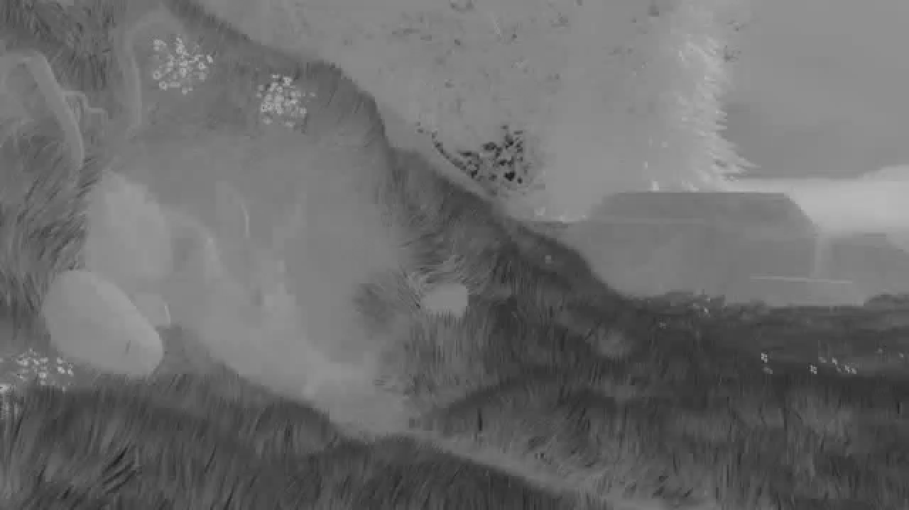
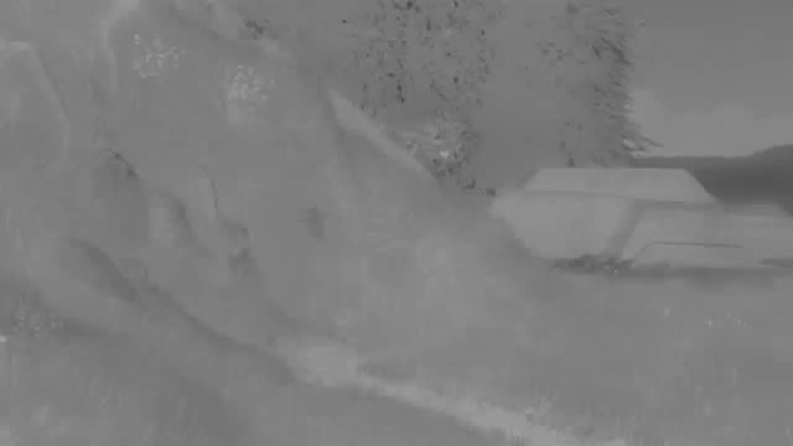

A typical use case for video research includes loading only the luma channel of a video. Often, researchers will convert a source from its arbitrary format to a YUV file, then only load the Y channel. Also, to test an algorithm, only the first N frames are needed. The next example shows how this can be done without generating YUV files
1 2 3 4 5 6 7 8 9 10 11 12 13 14 15 16 17 18 19 20 21 | import skvideo.io
import skvideo.datasets
import skvideo.utils
filename = skvideo.datasets.bigbuckbunny()
print("Loading only luminance channel")
vid = skvideo.io.vread(filename, outputdict={"-pix_fmt": "gray"})[:, :, :, 0]
print(vid.shape)
print("Enforcing video shape")
vid = skvideo.utils.vshape(vid)
print(vid.shape)
print("")
print("Loading only first 5 luminance channel frames")
vid = skvideo.io.vread(filename, num_frames=5, outputdict={"-pix_fmt": "gray"})[:, :, :, 0]
print(vid.shape)
print("Enforcing video shape")
vid = skvideo.utils.vshape(vid)
print(vid.shape)
print("")
|
Running this produces the following
Loading only luminance channel
(132, 720, 1280)
Enforcing video shape
(132, 720, 1280, 1)
Loading only first 5 luminance channel frames
(5, 720, 1280)
Enforcing video shape
(5, 720, 1280, 1)
Given an input raw video format like yuv, one must specify the width, height, and format. By default, scikit-video assumes pix_fmt is yuvj444p, to provide consistent saving and loading of video content while also maintaining signal fidelity. Note that the current state of skvideo does not support direct loading of yuv420p (i.e. loading into rgb format still works, but you cannot access the yuv420 chroma channels directly yet. This is a data organization issue.)
1 2 3 4 5 6 7 8 9 10 11 12 13 14 15 16 17 18 19 20 21 22 23 24 25 26 27 28 29 30 31 32 33 34 35 36 37 38 39 40 41 42 43 44 45 | import skvideo.io
import skvideo.utils
import skvideo.datasets
# since this skvideo does not support images yet
import skimage.io
import numpy as np
filename = skvideo.datasets.bigbuckbunny()
filename_yuv = "test.yuv"
# first produce a yuv for demonstration
vid = skvideo.io.vread(filename)
T, M, N, C = vid.shape
# produces a yuv file using -pix_fmt=yuvj444p
skvideo.io.vwrite(filename_yuv, vid)
# now to demonstrate YUV loading
vid_luma = skvideo.io.vread(filename_yuv, height=M, width=N, outputdict={"-pix_fmt": "gray"})[:, :, :, 0]
vid_luma = skvideo.utils.vshape(vid_luma)
vid_rgb = skvideo.io.vread(filename_yuv, height=M, width=N)
# now load the YUV "as is" with no conversion
vid_yuv444 = skvideo.io.vread(filename_yuv, height=M, width=N, outputdict={"-pix_fmt": "yuvj444p"})
# re-organize bytes, since FFmpeg outputs in planar mode
vid_yuv444 = vid_yuv444.reshape((M * N * T * 3))
vid_yuv444 = vid_yuv444.reshape((T, 3, M, N))
vid_yuv444 = np.transpose(vid_yuv444, (0, 2, 3, 1))
# visualize
skvideo.io.vwrite("luma.mp4", vid_yuv444[:, :, :, 0])
skvideo.io.vwrite("chroma1.mp4", vid_yuv444[:, :, :, 1])
skvideo.io.vwrite("chroma2.mp4", vid_yuv444[:, :, :, 2])
# write out the first frame of each video
skimage.io.imsave("vid_luma_frame1.png", vid_luma[0])
skimage.io.imsave("vid_rgb_frame1.png", vid_rgb[0])
skimage.io.imsave("vid_chroma1.png", vid_yuv444[0, :, :, 1])
skimage.io.imsave("vid_chroma2.png", vid_yuv444[0, :, :, 2])
|
Luminance video (luma.mp4)
Chroma channel 1 video (chroma1.mp4)
Chroma channel 2 video (chroma2.mp4)
Luminance frame (vid_luma_frame1.png)
RGB frame (vid_rgb_frame1.png)
Chroma channel 1 frame (vid_chroma1.png)
Chroma channel 2 frame (vid_chroma2.png)
